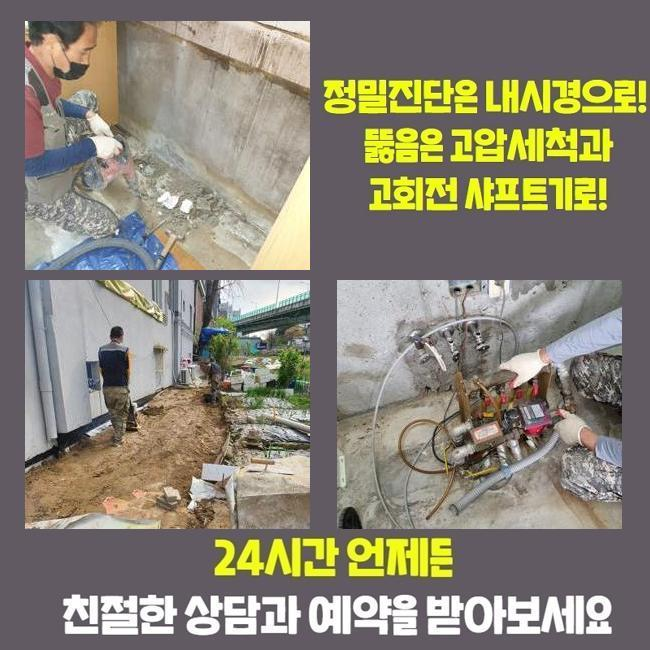
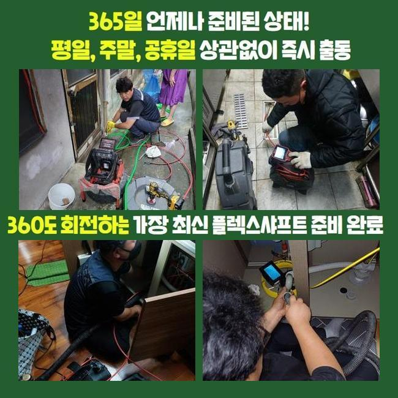
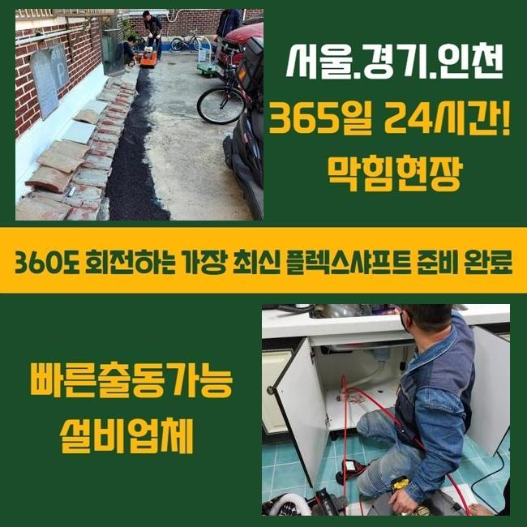
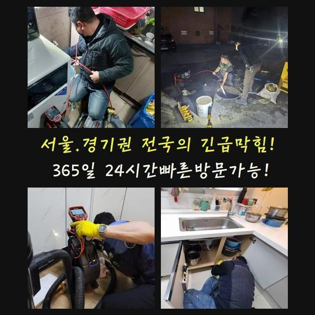

🏠 연수구 선학동씽크대배수관막힘 송도 배관내시경카메라 설비출장
용인 싱크대막힘 전문 시공 후기

📋 작업 개요
- 위치: 용인
- 서비스 유형: 싱크대막힘, 하수구막힘, 배관막힘, 누수수리, 역류해결, 뚫는업체, 배관청소, 고압세척, 배관보수
- 작업 일시: 2025. 2. 20. 17:50
- 업체명: 하수구수사대 (010-5615-2118)
🔍 문제 상황
연수구 선학동씽크대배수관막힘 송도 배관내시경카메라 설비출장
여러 활동으로 물을 활용하면 다수의 원인으로 인해 배관 통로에 지저분한 것들이 겹겹이 쌓여갈 수 있습니다
조금씩 부풀어 오르다보면 마치 철옹성같이 밀착이 되다보니 꿈쩍도 하지 않아요
벽체에 부착되어 있는 오물을 걷어내려고 계속 공격하면은 배관 크랙이나 누수까지 되는 상황 등 복잡해질 수 있어요
무엇이 잘못됐는지 식별되는 현장이라고 쳐도 배관용으로 출시된 장비를 조화롭게 선택해서 시공해야만 결함없이 말끔하게 배수관을 만들 수 있어요
셀프 조치를 한다면 전체적인 문제를 조사하기는 사실상 어려우니 큰 보람이 없을 것입니다
이번 케이스는 여러분이 머무르는 보금자리이나 하수가 거꾸로 치솟아서 습하고 냄새까지 유발되어 급하게 바로잡아 줄 수 있냐고 접수를 해주셨습니다
지체하는 시간을 줄이고 시공에 적용할 장치를 갖고 현장을 찾게 되었습니다
당장에 문제성 하수구로 향해서 현황을 조사하니 바닥 하수구 속에서 혼탁한 물이 솟구치는 모습이 보였습니다
문제를 발견하자마자 유통되는 배관 청소제로 뚫어보려고 노력했지만 그다지 물길이 트이지는 않고 갈수록 악화됐다고 하셨어요

🔎 원인 분석
💡 전문가 진단: 정밀 진단 장비를 사용하여 슬러지의 고착 여부를 판명하고 타격/세척 작업을 실시했습니다.
내부의 부패한 물까지 넘쳐서 냄새분자까지 확산되어 벽지와 가구에 냄새가 베이는 등 시간을 보내고 계셨다고 합니다
하수구 고장을 확실하게 탈피하기 위해선 바탕이 되는 이유가 뭐길래 하수의 소통 장애가 형성된 것인지 확실하게 세부 정보를 얻어야 합니다
그러므로 사전에 누락되지 않게 지참한 내시경 기기를 동원해서 관로 안을 분석했는데요
조금씩 이동하며 스크린을 주시하면서 상세히 들여다 봤더니 배관 벽체의 곳곳에서 기름때가 잔뜩 뭉쳐있는 물질이 통수의 장애가 됐단 걸 짐작해 보게 됐습니다
돌덩이처럼 응축된 유분 덩어리를 물리력으로 배관에서 뜯어내려고 도전하면 배관에 크고작은 생채기가 일어날 수도 있습니다
맞춤으로 오물을 없애는 툴이나 약물의 힘을 빌리는 게 훨씬 안전합니다
내시경 조사를 하며 수집한 정보를 고객님께도 투명하게 공개를 해드리고 청소를 돕는 정비 기기를 별도로 작동해 주었습니다
여기서는 고압세척 단계가 들어갔는데 기본적인 정돈이 완수되고서 한번 배관 카메라의 도움으로 진행도를 살폈습니다
물기가 빠지려는 움직임을 감지했지만 아직까지는 작업이 더 들어가야 했으므로 계속해서 진행하는 중이던 세정을 거쳤습니다
통수를 가로막던 유지방이 풀리고 통로가 확보됐음을 체크하고서 시공을 마무리 짓게 되었습니다

🔧 작업 과정
정말 끝으로 내시경 변화된 곳을 봤는데 기름지던 물질들이 싹 소거 처리가 완료돼서 배수로가 맑아진 모습을 생생히 목격할 수 있었네요
배관의 곳곳에서 단단하게 말라 붙어있던 유분기의 규모가 막대하다고 초기에는 생각했었지만 천만다행이게도 다른 장치를 다시 세팅하지 않아도 해결책이 마련됐기에 시간을 아낄 수 있었어요
부드러운 기름이 아니고 석회가 원인이 되어서 고장이 일어났다면 단순한 처치로는 수선되기 힘들어요
만일 석회로 변성된 찌꺼기가 물길을 봉쇄하고 있다면 바로 장치부터 켜기 보다는 유연하게 연화작업을 해 줄 용액을 선제적으로 넣습니다
액화 처리를 하는 클리너를 흘려보내고 일정시간 대기하면 겉으로 흰 거품이 나오게 되는데 물을 조금씩 내려보내며 헹궈내 준다면 상호작용이 일어나면서 치우기 쉽게 묽어집니다
석회제거제 제품들은 평범한 사람들이 바로바로 사진 못하니 심상치 않은 물질이 끼인 걸 감을 잡으셨다면 믿을 수 있는 숙련가에게 맡겨야 긍정적인 결과가 있을 겁니다
시중의 배관 클리너로 물길을 뚫어 보려는 시도를 하시는데 석회가 유발하는 상황이면 일반 클리너로는 이렇다할 성과를 내지 못해요
하수관의 불통이 빚어지는 사유는 짐작하기 힘들기 때문에 강하게 뚫기 이전에 먼저 내시경 기기를 안으로 보내어 가로막힌 쪽들이 어딘지 판단해야 명확하게 배수관을 만들 수 있어요
육안으로 판별해서는 많은 배관들이 결합된 배수로 전체를 눈치 채긴 힘들어요
내시경 조사 결과를 통해 내부를 진단하는 과정이 기반이 되어야 합니다
하수의 흐름상의 문제는 며칠만에 생기는 현상이 아니고 다년간 물이 이동하면서 먼지나 유분기가 차곡차곡 쌓여가다가 견고한 결합체로 변성될 수 있습니다
물 흐름이 끊기기 이전에 경각심을 가지고 쓰는 것이 이상적이며 그러려면 일정한 시기마다 온수를 배수관을 씻어주면서 뭉쳐있는 노폐물 덩어리가 휩쓸려 갈 수 있도록 한번씩 풀어주면 좋아요
베스트는 이물질들이 흘러흘러흘러깊숙이 자리하지 않도록 배수구 거름망을 끼운 채로 수도를 사용하는 게 좋은 예방책입니다
거주 목적의 가정집을 비롯해 영업장이나 상가 등 수도를 쓰는 곳에서는 이와 유사한 통수 문제를 겪을 수 있습니다
갑자기 달라진 하수구 기능을 알게 됐으면 상황이 더 나빠지지 않게 신속한 조치로 개선해야 합니다
막힘이 심화되다보면 역류 현상이 불가피해지고 부패한 냄새까지 위협하는 어려움이 가중되기 때문입니다


✅ 작업 완료
견디지 못한 관로에 균열이 생기면 이웃집까지도 동일한 문제가 일어날 수 있으므로 이걸 수습하기 위한 지출까지 본인이 져야 할 수 있습니다
관로에 이물이 빠지지 않도록 각별히 검열하면서 사용 해야 비용절약이 됩니다
이런 방식으로 평소 모범적으로 요강을 지키더라도 시간이 오래 된다면 막힘 사태가 피할 수 없이 나타납니다
섣부르게 대응하지 마시고 저희 업체에 하수관의 보수를 요청주시기 바랍니다


⚠️ 베란다 누수 및 방수 관리 방법
- ✅ 비가 많이 올 때 창틀 주변이나 아래층 천장에 얼룩이 생기는지 정기적으로 확인해 보세요.
- ✅ 우수관 주변 실리콘 마감이 들뜨거나 깨진 틈새가 있는지 손상 여부를 수시로 체크하세요.
- ✅ 베란다 바닥 타일의 줄눈(메지)이 소실되면 그 틈으로 물이 침투하여 누수가 유발됩니다.
- ✅ 누수 의심 증상 발견 시 방치하면 아래층 손실이 커지므로 즉시 전문가의 진단을 받으십시오.
💡 핵심 정리
- 확실한 장비 작업(내시경 점검 및 샤프트 스케일링)으로 원인을 뿌리 뽑습니다.
- 작업 후 1년 이내에 동일한 부위 재발 시 100% 무상 A/S 서비스를 보장합니다.
- 서울 · 경기 · 인천 전 지역에 24시간 언제든 긴급 출동할 수 있도록 항시 대기 중입니다.
❓ 자주 묻는 질문 (FAQ)
🚨 용인 싱크대막힘 문제로 고민이신가요?
정확한 원인 진단과 확실한 시공으로 재발 없는 해결을 약속드립니다.
24시간 긴급 출동 | 서울 · 경기 · 인천 전지역 | 1년 내 재발 시 무상 A/S